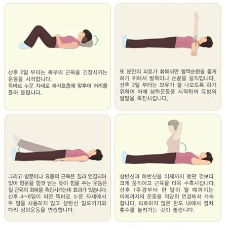

산후관리
산후 운동관리
출산 후 적당한 운동은 산모의 체중이 임신 이전 상태로 회복되고 이완된 복벽이나 회음부 근육의 탄력을 회복하는 데 도움을 줍니다.
1. 산후 운동의 효과
- 분만 시 늘어난 복벽과 골반 및 근육의 수축회복을 촉진시키고 체력을 길러줍니다.
- 혈액순환을 좋게 해 줍니다.
- 소변의 배출과 자궁수축을 도와줍니다.
- 변비방지에도 도움이 됩니다.

2. 혼자서 하는 운동
-
항문 조이기(일명 케겔운동)
- 무릎을 세우고 누운 상태에서 항문 조이기, 풀기를 반복(20회에서 점차 확대)
- 매일 일정 시간하면 골반저 근육이 튼튼해지고 부기도 가라앉으며 소변이 찔끔찔끔 나올 시 출산 3개월까지 계속하면 도움이 됩니다.
- 이 운동은 산모뿐만 아니라 남녀노소에게 좋은 운동으로 알려져 있습니다.
(출처: 질병관리청 국가건강정보포털
감수: 대한산부인과학회 정보위원회)